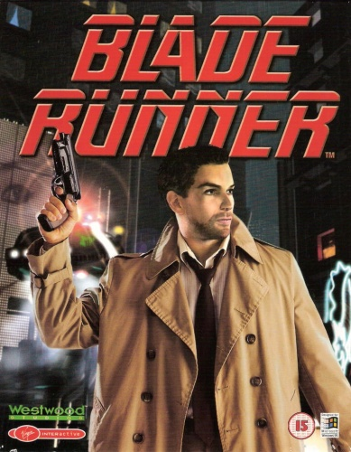

Game review by : Neuromancer
Year : 1997
Developer : Westwood Studios
Degree of Cyberpunk visuals : Very High
Correlation to Cyberpunk themes : Very High
Rating : 8/10

Introduction: Blade Runner was published in 1997 by Westwood Studios who also made titles like Dune II, Legend of Kyrandia and an estimated 27,836 variations of Command & Conquer.
This is a point-and-click adventure played in the Blade Runner universe of both the novel by Philip K Dick and the motion picture by Ridley Scott. The story takes place in roughly the same timeframe of the events in the movie and features some of the same locations and characters.
The gameplay was hyped at the time because of the "Real Time" system and the randomization of events. This results in giving the player four different endings based on his or her decisions during the game.
The Story: the player takes on the role of Ray McCoy who is a rookie Blade Runner in the city of Los Angeles in the year 2019. Ray is given his first assignment of investigating one or more animal killers.
From there on Ray follows a trail of clues leading to a group of replicants who are trying to escape their retirement by hijacking a moonbus and leaving earth.
The strength in the story lies in the fact that some characters clearly are replicants while others can be either replicant or human. This is of course due to the randomization but in some cases because of the decisions made by the player.
"They don't advertise for killers in the newspaper. That was my profession. Ex-cop. Ex-blade runner. Ex-killer."
Along the way we get to meet a myriad of characters all adding to the story. It would simply take up too much space to describe them all but among them are: Gaff, Tyrell, JF Sebastian, Chew (I make your eyes) and Rachel from the movie while introducing some new ones. Of course the "other" group of escaped replicants with a charismatic leader but also Ray's partner Crystal and a young girl named Lucy.
Every now and then we find traces and clues of Deckards investigation in progress while we visit some of the same locations he has or will.
The real star of the story (imho) is a 14 year old girl named Lucy. Lucy has great doubts about whether she is a replicant or a human. She takes on the role played out in the movie by Rachel posing the same questions she has.
"I make friends. They're toys. My friends are toys. I make them. It's a hobby."
The use of different endings based on the choices we make during the game makes the player more aware of them. Even though the story follows predetermined scripts it can branch out in a few different storylines. Don't expect several completely different games though, just small variations of the same story that do very much change the outcome further on.
The creators tell their story with enough room for interpretation. This may sound vaque but i will illustrate this with an example: as Ray you can decide to retire (kill) everyone you meet including humans. Do so and Gaff will simply give you an origami unicorn and its game over. No more explanation required, right?
There are some variations in the game that either you like or you don't because these parts do not appear to fit in a further straightforward point and click adventure: use of the ESPER is vital in finding some clues in photographs, Voight-Kampf is used to determine people are people or replicants and there even is a 3rd person shooting section which may scare the common adventurer.
"Sushi. That's what my ex-wife called me. Cold fish."
The Game: the visuals are the beef of the game. All backgrounds and environments are simply stunning and truly grasp the feel of the movie. The downside are the 3D animated characters that just do not live up to the standard. They look and move like rag-dolls. The music is very good as it incorporates the Vangelis score as well as new tracks composed just for the game. The game is controlled like any other point-and-click adventure so there is no story there.
"Watch how she takes pleasure from the beast that once corrupted man."
Gameplay: the puzzles used are sometimes logical but can also be a bit too farfetched. Also there is some dreaded "pixel-clicking" (slowly moving your mouse over the screen trying to find that one pixel that enables you to find that one vital clue).
In overall the story takes its time and can be boring to those who are only used to frantic Shoot 'em up.
To be honest there isn't very much gameplay in its own to make this game stand out. The graphics and music do however. Any fans of the movie will find him or herself just wandering around LA and taking in the sights and sounds.
"This was not called execution. It was called retirement."
The Verdict: the gaming-experience leans heavily on the atmosphere created by the graphics and music. The appearance of numerous locations and characters from the movie greatly enhances this feeling even more. You do feel you are participating in the movie which is its greatest strength. If you do not like the movie there is simply not enough gameplay left to buy this.